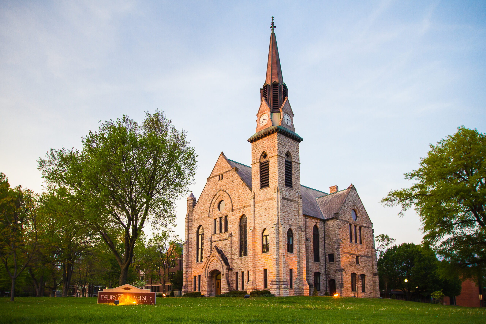

The big small town
Springfield is Missouri's third-largest city, home to about 170,000 people, with roughly 475,000 across the wider metro area. It is the county seat of Greene County and the largest city in the Ozarks, which is how it earned its older nickname, the Queen City of the Ozarks. Route 66 was named here in 1926, so Springfield is also the road's birthplace.
Drury calls it the big small town that has it all: a steady economy, strong health care, an active arts and entertainment scene, and outdoor recreation close by. Health care is the largest employer — CoxHealth and Mercy together employ more than 20,000 people — alongside education, manufacturing, retail, and logistics. Bass Pro Shops, O'Reilly Auto Parts, and Jack Henry are all headquartered here.
Springfield is also a university town. Drury shares the city with Missouri State University, Evangel University, and Ozarks Technical Community College, all clustered in and around downtown.
Outside class, the city is unusually green for its size: the Springfield-Greene County Park Board maintains 103 parks and 3,200 acres, including a botanical center, a Japanese stroll garden, a butterfly house, and the Dickerson Park Zoo.
Downtown fills the calendar the rest of the year. First Friday Art Walk opens the galleries monthly; the Birthplace of Route 66 Festival brings vintage cars through Park Central Square each summer; the Japanese Fall Festival, held with Springfield's sister city of Isesaki, runs each September at the Botanical Gardens; and Cider Days, Arts Fest, and the Missouri Food Truck Festival fill out the seasons. Three restored historic theaters — the Gillioz, the Landers, and the Fox — host theater, ballet, opera, and live music, and the Springfield Art Museum is free to visit.
About 170,000 in the city, 475,000 in the metro area. The median age is 33.
Springfield-Branson National Airport (SGF) has direct flights to 14 U.S. cities and is about 20 minutes from campus. City Utilities runs the local bus network; the average commute is under 18 minutes.
Four distinct seasons, humid subtropical. July averages 79°F (26°C) and January 34°F (1°C), with about 14 inches of snow a year. Bring clothing for both extremes.
The Ozarks
The Ozarks of southwest Missouri and northwest Arkansas are known for their natural resources. Pristine streams, rivers, and lakes offer opportunities to canoe, fish, and boat within minutes of campus. The renowned Buffalo National River watershed, with hiking, fishing, and long views, is about two hours away.
Drury's commitment to sustainability grows out of this geography. Faculty often use the Ozarks as the university's own laboratory for learning about the natural world.
Things to do
Visit Springfield, the city's tourism office, keeps current listings for attractions, dining, events, and the outdoors.
Campus and history

Drury's history remains part of campus culture. Founded by Congregationalists in 1873 to help heal the wounds of the Civil War, Drury's first students included women and Native Americans. Stone Chapel, the region's oldest stone building, and Springfield Hall, a center of student life since 1909, remain working campus spaces.
The city around it is older still. Springfield was founded in 1834 and incorporated in 1838, on land where the Osage, Kickapoo, and Lenape had lived; the Trail of Tears passed west of town along the Old Wire Road during the 1838 Cherokee removal. The Civil War reached the city in 1861 at the Battle of Wilson's Creek, fought a few miles southwest and now a National Battlefield. Park Central Square downtown, where Wild Bill Hickok shot Davis Tutt in 1865, also carries a plaque for Horace Duncan, Fred Coker, and Will Allen, three Black men lynched by a mob there in 1906.